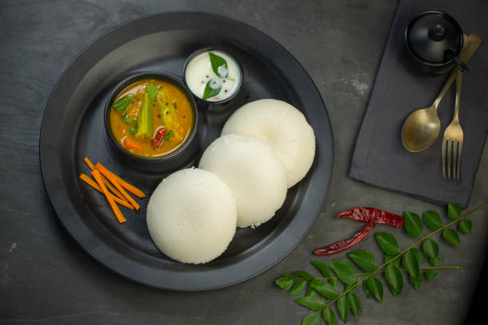

Idli Sambhar
Steps To Follow
- Cook dal: In a pressure cooker, cook the toor dal with water and turmeric until soft (about 3-4 whistles).
- Temper spices: In a pan, heat oil and add mustard seeds, curry leaves, and asafoetida. Once the mustard seeds splutter, add chopped onions and green chilies, sauté until onions turn golden.
- Add veggies and tamarind: Add chopped vegetables, tomatoes, and tamarind pulp. Stir and cook for a few minutes.
- Add sambhar powder: Add sambhar powder and cook for another 2-3 minutes.
- Add dal: Mash the cooked dal and add it to the vegetable mixture. Add water to adjust the consistency and simmer for 10 minutes. Add salt to taste.
- Serve the hot idlis with a generous portion of sambhar and coconut chutney.